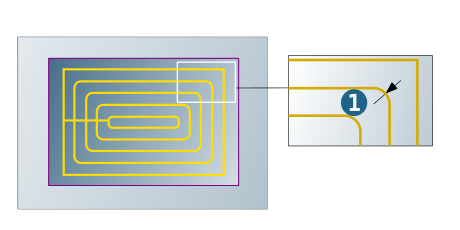

Strategy
Machining options
Edge only: Only available for the Shape offset mode. All lateral walls will be machined in a single axial infeed. The value of the Top parameter will not be considered.
Side walls: All lateral walls will be machined in multiple axial infeeds. The area to be machined (1) is specified using the boundary curves or milling surfaces. For information on the machining sequence and cutting mode, see sections Machining sequence and Cutting mode.
Machining priority
Axial sorting: Areas like corners or pockets are sorted axially and machined consecutively, so that empty paths and machining times are reduced.
Prefer spiral: Machining is performed in one continuous toolpath with a complete or an approximate spiral-shaped, vertical stepdown.
Allow zigzag: Machining occurs with an alternating orientation/cutting mode.
Cutting mode
Climb milling, Conventional milling: In the case of contour-parallel machining with continuous orientation, the following definitions apply: climb milling and conventional milling relate to clockwise rotating tools. To perform climb milling with an anticlockwise rotating tool, select conventional milling. For climb milling with tools rotating clockwise, the following machining directions apply:
(1) Outside machining in clockwise direction.
(2) Inside machining in counterclockwise direction.
 |
Mode
Shape offset (A): The shape of the toolpaths follows the defined bottom surfaces (2). Surface (3) and depth (4) must be defined as an offset to the bottom surfaces. Machining below the bottom surfaces is not possible. The Bottom parameter must therefore be >= 0.
Z Level (B): Machining is carried out level by level. Surface (3) and depth (4) are defined automatically by hyperMILL based on the defined model. Alternatively, both can also be manually defined directly on the model.
|  |
Geometry
Bottom surfaces (2): Additional surfaces with which the shape of the toolpaths and the vertical machining area are defined.
Note
If no milling surfaces or a boundary curve are defined, the bottom faces (seen from Z direction) must include the entire model. If no milling surfaces or a boundary curve are defined, the bottom surfaces (seen from the Z direction) must include the machining area.
Toolpath fillets
Fillet interior corners: Smooth filleting (rounding) of internal milling paths at the corners of contour pockets or islands.
Fillet radius (1): Abrupt changes in direction within the cutting toolpaths are rounded with the specified radius.
|  |
Machining mode
Slope mode: The machining of surfaces with a small slope angle only leads to unsatisfactory quality (a lot of rest material). To save time these surface areas can be excluded from machining with the Slope mode in dependence on their slope angle.
Slope angle: Enter the minimum surface slope angle. Only those areas will be machined which have a larger slope angle.
Smooth overlap: Only available for slope dependent machining. Enable if you want the toolpaths of flat and steep areas to overlap. The overlap (1) ensures a very high level of surface quality in the transition area. (2) Transition area activated, (3) Transition area not activated.
The overlap area is visualized in the graphic for illustrative purposes only. This area is not graphically highlighted in the model.
(4) 3D Profile Finishing, (5) 3D Z Level Shape Finishing
 |
Options
Bottom to top milling: Activate when machining is to take place from bottom to top.
Undercut machining
Supported tool types for undercut machining: Lollipop, T-Slot Cutter, and Woodruff Cutter.
Undercut machining: (1) Enable to machine the model completely.
Undercut machining only: (2) Enable to only machine the undercut area.